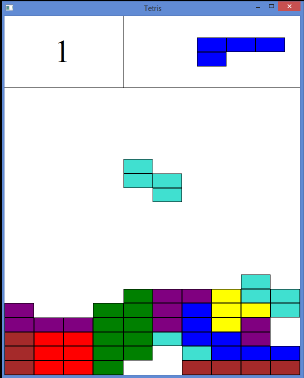

В этой главе мы разрабатываем классический тетрис. Мы смотрим дальше в класс Window, включая написание текста и рисование более сложных фигур. Мы также смотрим на сроки, случайные числа и графические обновления, такие как падающие фигуры и эффекты вспышки. Иллюстрация показана ниже:
Функция MainWindow аналогична методам из главы 2, Hello, Small World !. Он устанавливает имя приложения и возвращает указатель на главное окно, которое в данном случае является экземпляр класса TetrisWindow. Как сказано в главе 2 «Привет, маленький мир!» то имя приложения используется при доступе к реестру, при открытии или сохранении файла, а также пункт меню «О программе». Однако ни одна из этих функций не используется в этом приложении:
#include "..\\SmallWindows\\SmallWindows.h"
#include "GameGrid.h"
#include "TetrisFigure.h"
#include "RedFigure.h"
#include "BrownFigure.h"
#include "TurquoiseFigure.h"
#include "GreenFigure.h"
#include "YellowFigure.h"
#include "BlueFigure.h"
#include "PurpleFigure.h"
#include "TetrisWindow.h"
void MainWindow(vector <String> /* argumentList */, WindowShow windowShow) {
Application::ApplicationName() = TEXT("Tetris");
Application::MainWindowPtr() = new TetrisWindow(windowShow);
}
В этом приложении мы не используем структуру StandardDocument из Главы 2, Привет, маленький мир !. Вместо этого класс TetrisWindow расширяет корневой класс Small Windows. Окно прямо. Причина в том, что нам не нужна функциональность Платформа StandardDocument или ее базовый класс Document. Мы не используем меню или ускорители, и мы не сохраняем и не загружаем файлы:
class TetrisWindow : public Window {
public:
TetrisWindow(WindowShow windowShow);
~TetrisWindow();
В этом приложении мы игнорируем мышь. Вместо этого мы рассмотрим работу с клавиатурой. В Метод OnKeyDown вызывается, когда пользователь нажимает или отпускает клавишу:
bool OnKeyDown(WORD key, bool shiftPressed, bool controlPressed);
Подобно круглому приложению, метод OnDraw вызывается каждый раз, когда клиент окна область нужно перерисовать:
void OnDraw(Graphics& graphics, DrawMode drawMode) const;
Методы OnGainFocus и OnLoseFocus вызываются, когда окно получает или теряет фокус ввода соответственно. Когда окно теряет фокус ввода, оно не получает никаких ввод с клавиатуры и таймер отключается, предотвращая перемещение падающей фигуры:
void OnGainFocus();
void OnLoseFocus();
Метод OnTimer вызывается каждую секунду, когда окно находится в фокусе. Он пытается переместить падающая фигура на один шаг вниз. Он вызывает метод NewFigure, если не удается переместить фигура вниз. Метод NewFigure пытается представить новую фигуру в игре доска. Если это не удается, вызывается метод GameOver, который спрашивает пользователя, хочет ли он новый игра. Метод NewGame вызывается, если пользователь хочет новую игру. Если пользователь не хотите новую игру, выходит из приложения:
void OnTimer(int timerId);
void EndOfFigure();
void GameOver();
void NewGame();
DeleteFullRows проверяет каждую строку, вызывая метод IsRowFull, и вызывает Методы FlashRow и DeleteRow для каждой полной строки:
void DeleteFullRows();
bool IsRowFull(int row);
void FlashRow(int row);
void DeleteRow(int markedRow);
Метод TryClose вызывается, если пользователь пытается закрыть окно, щелкнув значок крестик в правом верхнем углу окна. Он отображает окно сообщения, которое спрашивает пользователя, если они действительно хотят бросить курить:
bool TryClose();
Поле gameGrid содержит сетку, на которой отображаются фигуры (см. Следующий раздел). Падающая фигура (падающая фигура) падает на сетку, а следующая фигура падает down (nextFigure) отображается в правом верхнем углу. Каждый раз, когда игрок заполняет строку, оценка (currScore) увеличивается. Идентификатор таймера (TimerId) необходим для отслеживания таймер и получает произвольное значение 1000. Наконец, список фигур (figureList) будет быть заполненным семью фигурами, по одной каждого цвета. Каждый раз, когда требуется новая фигура, случайным образом выбранная фигура из списка будет выбрана и скопирована:
private:
GameGrid gameGrid;
TetrisFigure fallingFigure, nextFigure;
int currScore = 0;
bool timerActive = true, inverse = false;
static const int TimerId = 1000;
vector<TetrisFigure> figureList;
};
Параметр PreviewCoordinate в вызове конструктора Window указывает, что размер окна фиксированный, а второй параметр указывает, что размер составляет 100 * 100 единиц. Это означает, что, в отличие от приложения круга, размер фигур и игровых полей будет изменить, когда пользователь изменяет размер окна:
#include "..\\SmallWindows\\SmallWindows.h"
#include "GameGrid.h"
#include "TetrisFigure.h"
#include "RedFigure.h"
#include "BrownFigure.h"
#include "TurquoiseFigure.h"
#include "GreenFigure.h"
#include "YellowFigure.h"
#include "BlueFigure.h"
#include "PurpleFigure.h"
#include "TetrisWindow.h"
TetrisWindow::TetrisWindow(WindowShow windowShow)
:Window(PreviewCoordinate, Rect(0, 0, 100, 100),
nullptr, OverlappedWindow, NoStyle, Normal),
Верхние 20 процентов клиентской области зарезервированы для оценки и следующей цифры. А игровая сетка покрывает нижние 80 процентов клиентской области (от 20 до 100 единиц высоты):
gameGrid(Rect(0, 20, 100, 100)) {
Поскольку мы расширяем класс Window, нам нужно установить заголовок окна вручную:
SetHeader(TEXT("Tetris"));
Интервал таймера установлен на 1000 миллисекунд, что означает, что будет вызываться OnTimer. каждую секунду. Генератор случайных чисел инициализируется вызовом стандартных функций языка Си. srand и время:
SetTimer(TimerId, 1000);
srand((unsigned int) time(nullptr));
Список фигур инициализируется одной фигурой каждого цвета; падающая и следующая фигура случайно выбранный из этого списка. Одна из фигур в списке будет копироваться каждый раз, когда мы нужна новая фигура:
figureList.push_back(RedFigure(this, &gameGrid));
figureList.push_back(BrownFigure(this, &gameGrid));
figureList.push_back(TurquoiseFigure(this, &gameGrid));
figureList.push_back(GreenFigure(this, &gameGrid));
figureList.push_back(YellowFigure(this, &gameGrid));
figureList.push_back(BlueFigure(this, &gameGrid));
figureList.push_back(PurpleFigure(this, &gameGrid));
fallingFigure = figureList[rand() % figureList.size()];
nextFigure = figureList[rand() % figureList.size()];
}
Строго говоря, не обязательно сбрасывать таймер при закрытии окна Тетриса. В деструктор включен только для полноты:
TetrisWindow::~TetrisWindow() {
DropTimer(TimerId);
}
Метод OnKeyDown переопределяет метод в классе Window и вызывается каждый раз. пользователь нажимает клавишу. Падающую фигуру стараемся перемещать в соответствии с нажатой клавишей. Нам все равно, нажал ли пользователь клавишу Shift или Ctrl:
bool TetrisWindow::OnKeyDown(WORD key, bool /* shiftPressed */,
bool /* controlPressed */) {
switch (key) {
case KeyLeft:
fallingFigure.TryMoveLeft();
break;
case KeyRight:
fallingFigure.TryMoveRight();
break;
case KeyUp:
fallingFigure.TryRotateAnticlockwise();
break;
case KeyDown:
fallingFigure.TryRotateAnticlockwise();
break;
Когда пользователь нажимает клавишу пробела, падающая фигура падает с видимой скоростью, создавая иллюзия падения. Мы пытаемся перемещать падающую фигуру на один шаг вниз каждые 10 миллисекунд на вызов функции Win32 API Sleep. Метод TryMoveDown возвращает false, если он больше невозможно переместить фигуру вниз:
case KeySpace:
while (fallingFigure.TryMoveDown()) {
::Sleep(10);
}
break;
}
return true;
}
Метод OnDraw начинается с рисования игровой сетки и двух линий, разделяющих клиентскую область. на три части. В верхнем левом углу отображается текущий счет, в правом верхнем углу отображается следующий рисунок, а в нижней части отображается фактическая игровая сетка:
void TetrisWindow::OnDraw(Graphics& graphics,
DrawMode /* drawMode */) const {
gameGrid.DrawGameGrid(graphics, inverse);
graphics.FillRectangle(Rect(Point(0, 0), Point(100,20)), White, White);
graphics.DrawLine(Point(40, 0), Point(40, 20), Black);
graphics.DrawLine(Point(0, 20), Point(100, 20), Black);
Обратите внимание, что мы добавляем смещение при рисовании следующей фигуры, чтобы выйти из игры. сетку в верхний правый угол. Значение 25 перемещает фигуру из середины сетки в середину его правой половины, а значение -18 перемещается из сетки вверх в область, предшествующую сетки:
fallingFigure.DrawFigure(graphics);
nextFigure.DrawFigure(graphics, Size(25, -18));
Шрифт партитуры установлен на Times New Roman, размер 10. Здесь размер не относится к типографские точки, но до логических единиц. Поскольку в вызове конструктора Window указано, что мы дал систему координат PreviewCoordinate и размер 100 * 100, высоту text будет 10 единиц, что составляет десятую часть высоты текстовой клиентской области. Это тоже половина высоты части клиентской области, где написана оценка:
Font scoreFont(TEXT("Times New Roman"), 10);
Последний параметр false в вызове метода DrawText указывает, что размер текст не будет пересчитан. В следующих главах мы будем отображать текст, сохраняющий тот же размер, независимо от размера окна и разрешения экрана. Однако в этой главе размер текста будет изменен, когда пользователь изменит размер окна:
graphics.DrawText(Rect(0, 0, 40, 20), to_String(currScore),
scoreFont, Black, White, false);
}
Методы OnGainFocus и OnLoseFocus запускают и останавливают таймер соответственно, чтобы падающая фигура не падает, когда окно не в фокусе:
void TetrisWindow::OnGainFocus() {
SetTimer(TimerId, 1000);
}
void TetrisWindow::OnLoseFocus() {
DropTimer(TimerId);
}
Таймер активен, когда он находится в фокусе ввода. Когда он активен, метод TryMoveDown будет вызываться каждый раз при вызове метода OnTimer (раз в секунду). Когда фигура больше не может упасть (метод TryMoveDown возвращает false), EndOfFigure метод называется:
void TetrisWindow::OnTimer(int /* timerId */) {
if (timerActive) {
if (!fallingFigure.TryMoveDown()) {
EndOfFigure();
}
}
}
Когда падающая фигура не может двигаться вниз, метод OnTimer вызывает метод NewFigure. Во-первых, нам нужно сохранить падающую фигуру в игровой сетке, вызвав метод AddToGrid. Затем мы позволяем следующей фигуре стать новой падающей фигурой, и мы случайным образом выбрать новую следующую фигуру из списка фигур. Мы аннулируем площадь новая падающая фигура и область правого верхнего угла, где нарисована следующая фигура:
void TetrisWindow::NewFigure() {
fallingFigure.AddToGrid();
fallingFigure = nextFigure;
fallingFigure.InvalidateFigure();
nextFigure = figureList[rand() % figureList.size()];
Rect nextArea(40, 0, 100, 20);
Invalidate(nextArea);
UpdateWindow();
Удаляем возможные полные строки и обновляем окно:
DeleteFullRows();
UpdateWindow();
Если новая падающая фигура не действительна с самого начала, игра окончена и GameOver называется:
if (!fallingFigure.IsFigureValid()) {
GameOver();
}
}
Метод GameOver представляет счет и позволяет пользователю решить, хочет ли он новый игра. Если они хотят новую игру, она инициализируется вызовом NewGame. Если пользователь не хотите новую игру, вызов функции Win32 API PostQuitMessage завершает оформление заявки.
Обратите внимание, что мы вызываем другую версию метода Invalidate без параметров. Это делает недействительной всю клиентскую область:
void TetrisWindow::GameOver() {
Invalidate();
UpdateWindow();
Таймер неактивен, пока отображается сообщение:
timerActive = false;
String message = TEXT("Game Over.\nYou scored ") +
to_String(currScore) +
TEXT(" points.\nAnother game?");
if (MessageBox(message, TEXT("Tetris"), YesNo, Question)==Yes) {
NewGame();
}
else {
::PostQuitMessage(0);
}
}
Метод NewGame инициализирует случайно выбранные новые падающие и следующие фигуры, сбрасывает счет и очищает игровую сетку перед активацией таймера, а также делает недействительными и обновляет окно, в результате чего новая падающая фигура начинает падать, а новая игра начать:
void TetrisWindow::NewGame() {
fallingFigure = figureList[rand() % figureList.size()];
nextFigure = figureList[rand() % figureList.size()];
currScore = 0;
gameGrid.ClearGameGrid();
timerActive = true;
Invalidate();
UpdateWindow();
}
При удалении полных строк мы перебираем строки, мигая и удаляя каждую полную строку. Увеличиваем оценку и обновляем площадь строки. Обратите внимание, что строки начинаются сверху сетки. Это означает, что мы должны пройти цикл от самой высокой строки к самой низкой строке, чтобы удалите строку в правильном порядке.
Обратите внимание: если строка мигает и удаляется, мы не обновляем переменную строки, так как удаленная строка будет заменена на строку выше, которую также необходимо изучить:
void TetrisWindow::DeleteFullRows() {
int row = Rows - 1;
while (row >= 0) {
if (IsRowFull(row)) {
FlashRow(row);
DeleteRow(row);
++currScore;
Rect scoreArea(0, 0, 40, 20);
Invalidate(scoreArea);
UpdateWindow();
}
else {
--row;
}
}
}
Строка считается полной, если в ней нет белого квадрата:
bool TetrisWindow::IsRowFull(int row) {
for (int col = 0; col < Cols; ++col) {
if (gameGrid[row][col] == White) {
return false;
}
}
return true;
}
Эффект вспышки выполняется путем перерисовки строки в нормальном и инвертированном цвете ( установлен обратный метод) трижды с интервалом 50 миллисекунд. При этом он особенно важно, чтобы мы аннулировали только область выбранной строки. В противном случае вся клиентская область окна будет мигать:
void TetrisWindow::FlashRow(int row) {
Rect gridArea = gameGrid.GridArea();
int colWidth = gridArea.Width() / Cols, rowHeight = gridArea.Height() / Rows;
Rect rowArea(0, row * rowHeight, Cols * colWidth, (row + 1) * rowHeight);
for (int count = 0; count < 3; ++count) {
inverse = true;
Invalidate(rowArea + gridArea.Top()Left());
UpdateWindow();
::Sleep(50);
inverse = false;
Invalidate(rowArea + gridArea.Top()Left());
UpdateWindow();
::Sleep(50);
}
}
При удалении строки мы ее не удаляем. Вместо этого мы перемещаем каждую строку над удалите строку на один шаг вниз и заполните верхнюю строку белыми квадратами. Осложнение что мы считаем строки сверху. Это делает нижнюю строку на экране строкой с самый высокий индекс. Создается впечатление, что мы начинаем снизу и удаляем все полный ряд, пока не дойдем до вершины:
void TetrisWindow::DeleteRow(int markedRow) {
for (int row = markedRow; row > 0; --row) {
for (int col = 0; col < Cols; ++col) {
gameGrid[row][col] = gameGrid[row - 1][col];
}
}
for (int col = 0; col < Cols; ++col) {
gameGrid[0][col] = White;
}
Invalidate(gameGrid.GridArea());
Invalidate(g);
UpdateWindow();
}